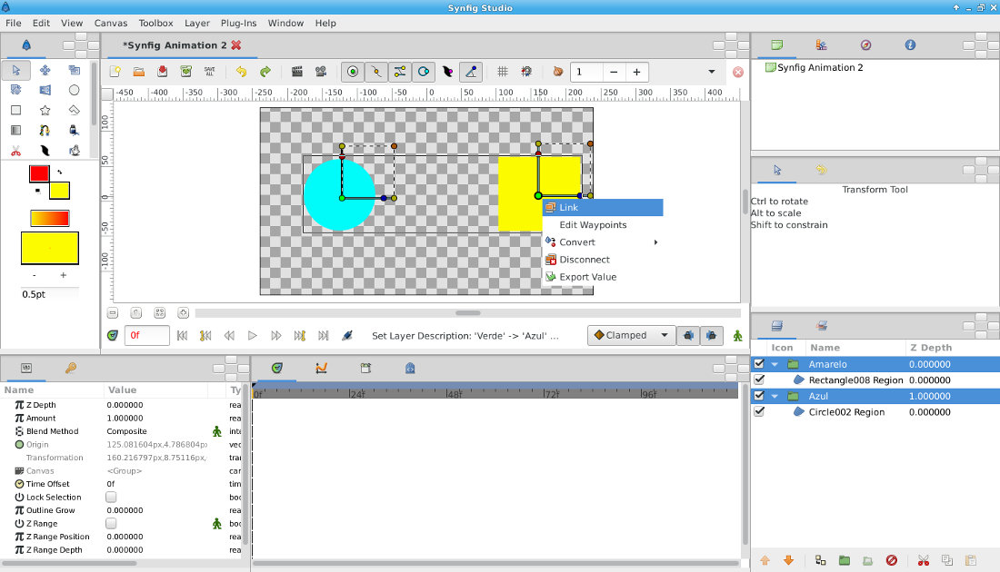

1. Desenhe uma Circle Region e um Rectangle Region. Crie uma Group Layer para cada um dos objetos criados.
2. Selecione as duas Group Layers na janela de layers. Selecione os dois centros (pontos verdes) das duas Group Layers, clique no botão direito do rato em cima de um dos pontos verdes e escolha a opção Link. Para selecionar vários pontos, utilize o CTRL: desenhe uma caixa à volta do primeiro ponto e enquanto clica no CTRL selecione o segundo ponto.
As duas Group Layers estão agora linkadas.
3. Se manipular uma Group Layer (rodar, etc.), a mesma operação é aplicada na segunda Group Layer.
4. A linkagem pode ser feita para outros parâmetros. Por exemplo, pode apenas linkar a cor de duas layers. Para isso, depois de selecionar as duas layers que pretende linkar, clique com o botão direito do rato em cima do parâmetro da cor e escolha opção Link.
Para quebrar a linkagem, clique no botão direito do rato em cima do parâmetro linkado e escolha Disconnet.